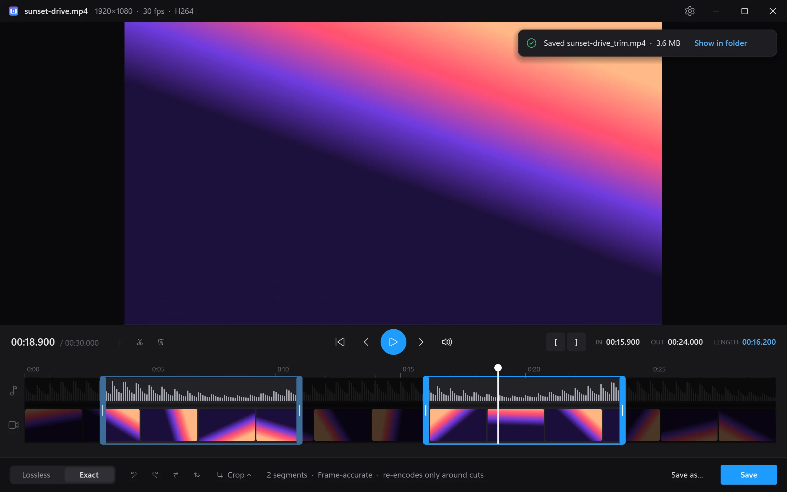

Trim any video from the right-click menu.
Right-click a video, drag the handles, hit Save. Cut out the boring middle, fix a sideways phone clip or crop it for Shorts. VidTrim opens instantly, plays almost any format, and cuts without re-encoding, so the trim is ready in seconds.

Right-click. Drag. Save.
No project, no import, no timeline to set up. VidTrim lives in the menu you already use.
Right-click any video
Choose “Trim...” in File Explorer or File Pilot. MP4, MKV, MOV, WebM, AVI and more.
Drag the handles
Scrub the filmstrip and waveform, step frame by frame, or press I and O at the playhead. Press S to split and Del to cut a part out.
Save
A new file lands next to the original. Your source is never touched.
Small app. Serious engine.
A native C++ app on Direct3D 11 and FFmpeg: no browser engine, no runtime to install.
Lossless in seconds
Lossless mode copies the original streams with no re-encode and no quality loss, at disk speed. The timeline marks the keyframe each cut will start from.
Frame-accurate smart cuts
Exact mode cuts on the exact frame. For H.264 and HEVC it re-encodes only the few frames around each cut and copies the rest untouched. Other formats re-encode on your GPU (NVIDIA, AMD or Intel).
Cut out the middle
Split at the playhead and delete what you don’t want, or keep several highlights from one long recording. Playback skips the removed parts, and saving joins the rest into one file.
Rotate, flip and crop
Fix a sideways phone video without re-encoding, mirror it, or crop to 9:16, 4:5, 1:1 or 16:9 for Shorts, Reels and posts. Drag the crop box to frame the shot.
Copy any frame
Right-click the video, or press CtrlC, to copy the current frame at full resolution, ready to paste into a chat, a doc or an image editor.
Plays almost anything
Built on FFmpeg with hardware decoding: H.264, HEVC 10-bit, AV1, VP9, ProRes and more, up to 4K60, with HDR tone-mapped for preview.
Opens instantly
A sub-megabyte native executable with its own GPU-drawn UI. The window is up before you let go of the mouse.
In sync on Bluetooth
VidTrim follows your output device as you switch it and delays the picture to match wireless speakers and headphones. The delay is adjustable for each device.
Signed updates
Every update is signed and verified before it installs. Turn on auto-update, or install updates yourself when VidTrim offers them.
Fast with the keyboard
Good to know
Windows says “Windows protected your PC.” Is that expected?
Yes. The installer isn’t code-signed yet, so SmartScreen doesn’t recognize it. Click More info, then Run anyway. Updates inside the app are signed and verified separately.
Where is “Trim...” on Windows 11?
In File Explorer it’s under Show more options (or Shift+right-click). File managers that use the full menu, like File Pilot, show it right away.
Lossless or Exact: which should I use?
Lossless copies the video as-is, so it’s instant and keeps full quality. Each part can only start on a keyframe, and VidTrim shows exactly where that is. Exact starts and ends on the frames you chose. For H.264 and HEVC it re-encodes only the frames between each cut and the nearest keyframe and copies everything else, so it’s nearly as fast. Other formats are re-encoded on your GPU.
How do I cut something out of the middle?
Move the playhead to where the unwanted part starts and press S (or the scissors button), move to where it ends and press S again, then click the piece in between and press Del. Keep as many parts as you like: they’re joined into one file when you save.
Does rotating or cropping cost quality?
Rotating and flipping don’t: VidTrim writes the new orientation into the file, the way phones do, so even a Lossless save stays untouched. Cropping changes the picture itself, so it saves in Exact mode and re-encodes the video.
Does it need admin rights or change my files?
No. VidTrim installs for your account only, in %LOCALAPPDATA%\Programs\VidTrim. Saves always go to a new file next to the original, such as clip_trim.mp4.
How do updates work?
VidTrim checks for a new version each time it opens. With auto-update on, it downloads the update, shows the installer’s progress, then reopens on the same video with your trim intact. With it off, an Update button appears in the title bar. Change this in Settings (Ctrl,).
How do I uninstall it?
Go to Settings → Apps → Installed apps, find VidTrim and choose Uninstall. This removes the app, its menu entry and its settings.